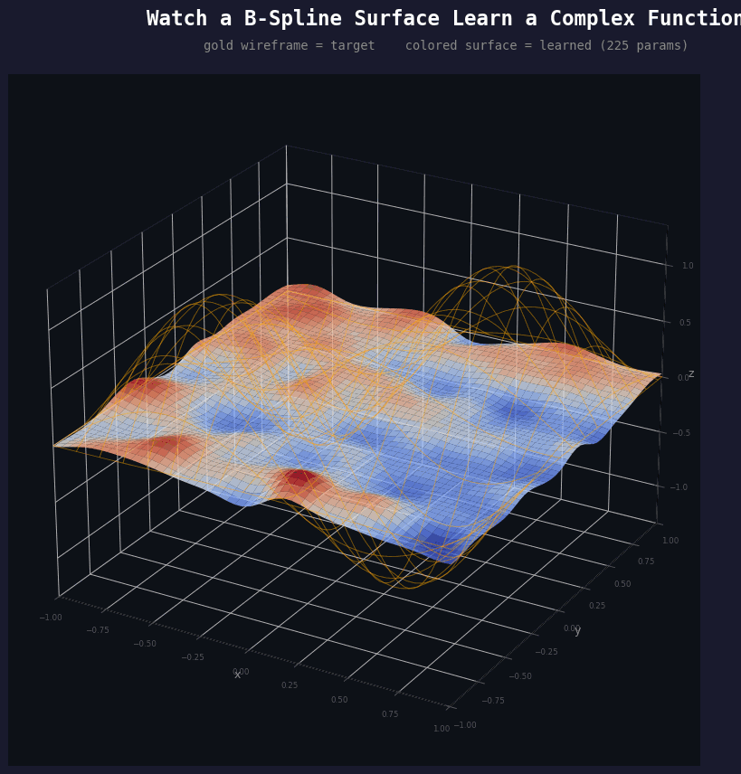
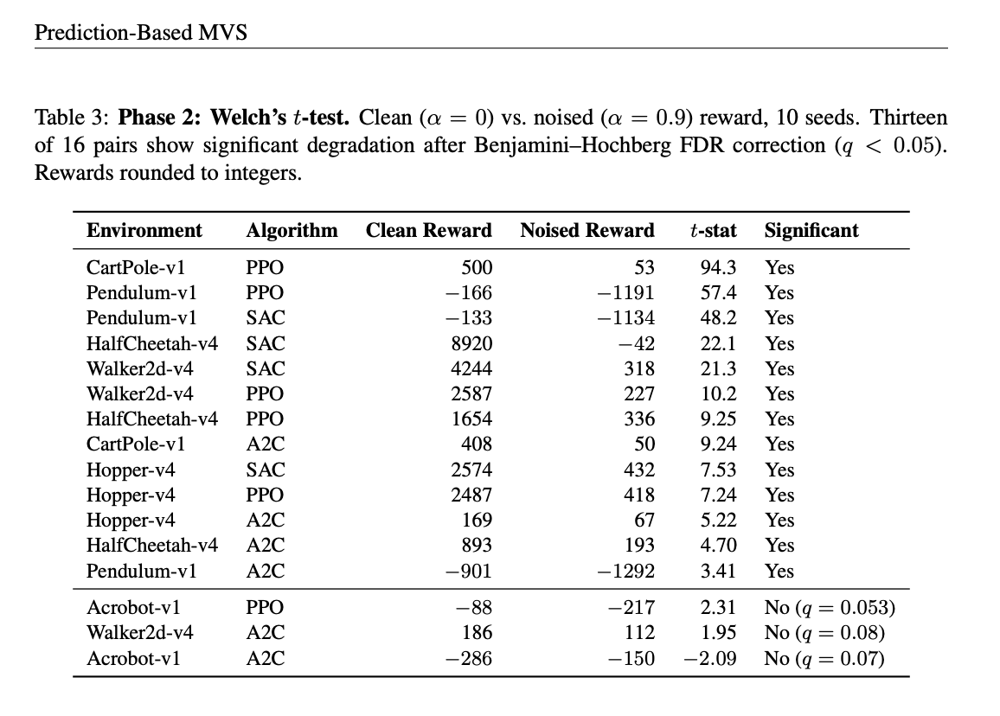
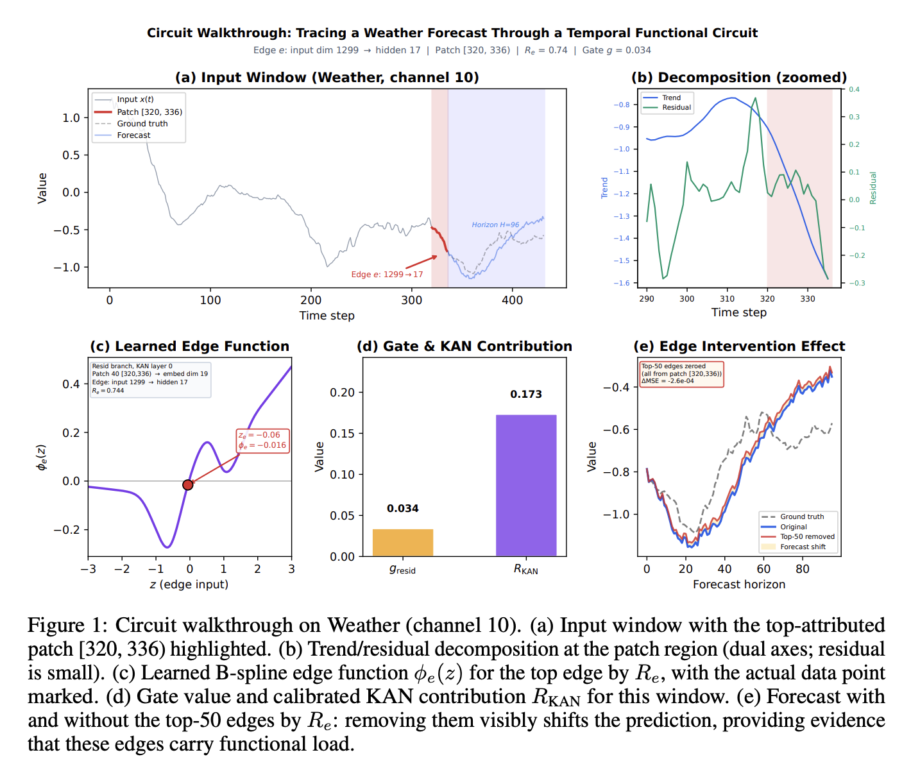
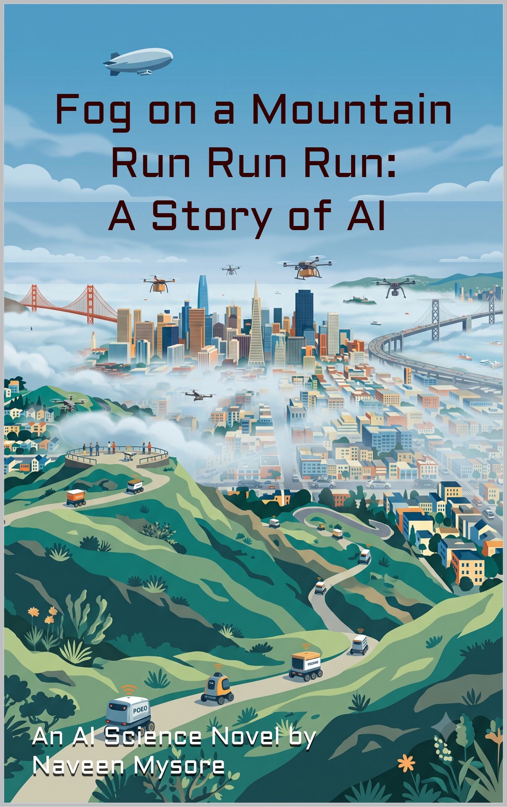
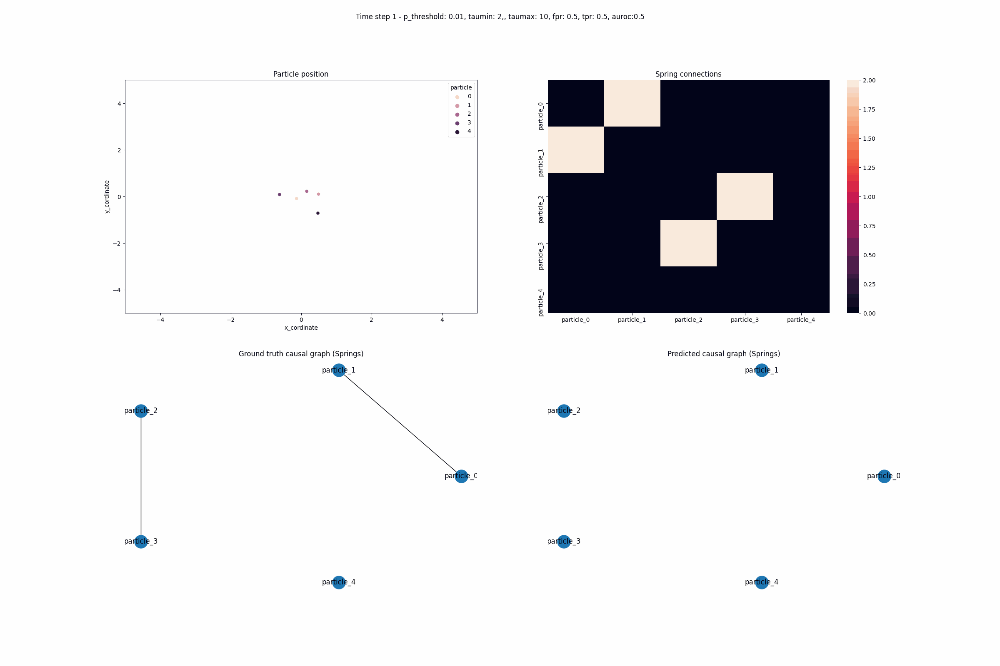
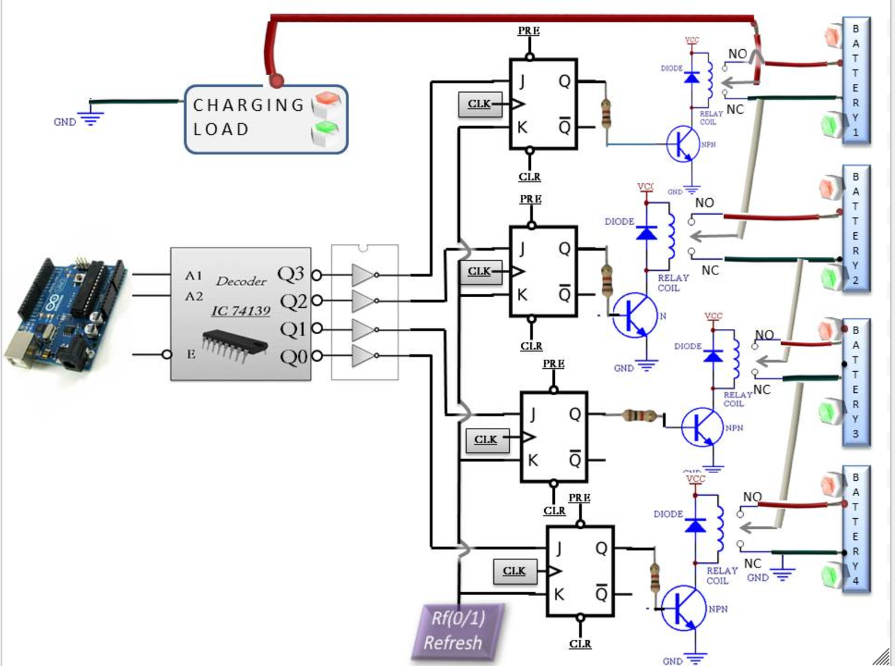
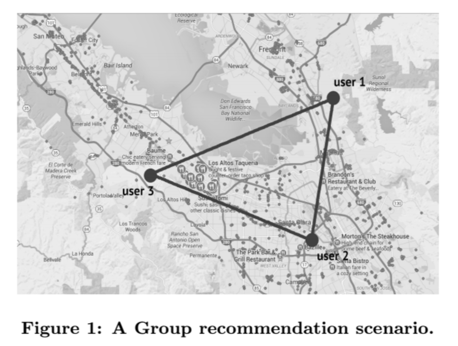
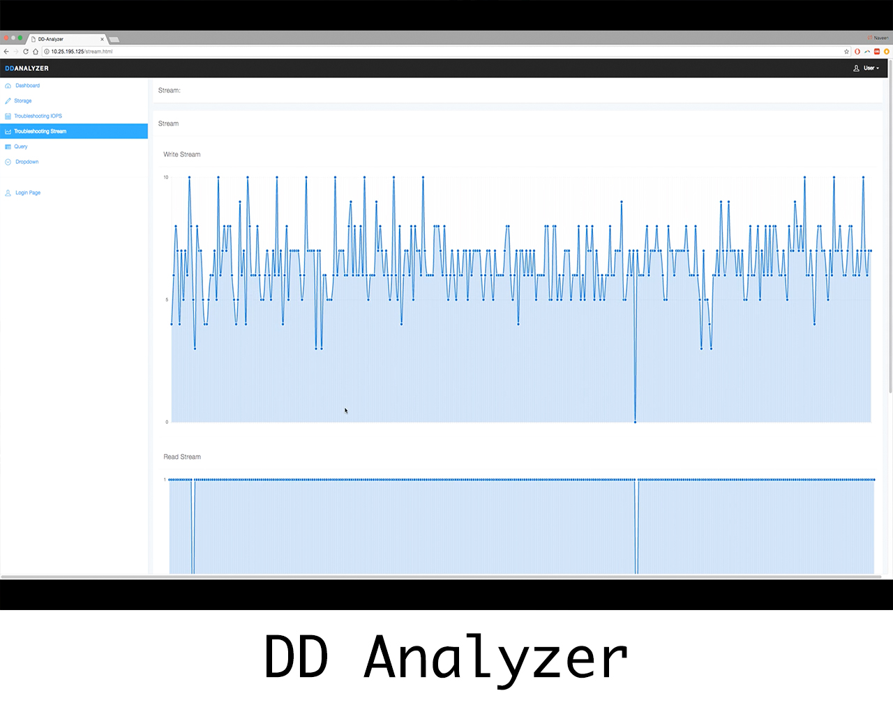

Senior Research Engineer at Dyssonance AI, building Llama-based memory and reasoning models with graph neural networks. Research focused on interpretable AI, causal reinforcement learning, and AI for Science. At UC Santa Barbara, I trained reasoning LLMs and worked on causal structure discovery and time-series forecasting. Previously shipped large-scale systems at Salesforce, Tableau, and Dell EMC. Creator of InKAN; named inventor on a U.S. provisional patent. Full-stack researcher, CUDA kernels to production APIs. M.S. from UNC Charlotte, B.E. from PES University. Open to collaborations, nmysore.work [at] gmail.com.
Year 2026


InKAN: Fast, Interpretable Kolmogorov-Arnold Network Layers
A PyTorch library for fast, numerically stable B-spline KAN layers — 2.8-3.5x faster forward-pass than recursive implementations. Supports 1D univariate splines and 2D tensor-product B-spline surfaces for building interpretable neural networks.
Try it: pip install inkan


Prediction-Based Markov Violation Scores for Detecting Non-Markovian Observations in Reinforcement Learning
Introduces prediction-based Markov Violation Scores (MVS) to detect when observations in RL violate the Markov property. The method leverages prediction errors from learned dynamics models to quantify non-Markovian behavior, enabling more robust policy learning under partial observability.
🎉 Accepted at RLC 2026 and published in Reinforcement Learning Journal.
Paper
Temporal Functional Circuits: From Spline Plots to Faithful Explanations in KAN Forecasting
Proposes Temporal Functional Circuits (TFCs), a framework for extracting faithful, interpretable explanations from Kolmogorov-Arnold Networks (KANs) applied to time-series forecasting. By analyzing learned spline activations, TFCs reveal how individual input features are transformed and combined, offering transparent insight into KAN predictions.
Status: Under review for NeurIPS 2026
arXiv Paper
Reasoning LLM Model trained using RL
Scan the QR code above to try our live nutrition estimation service! Text a meal description like "I had a bagel for breakfast" and get instant nutrition analysis. This LLM was trained on the NutriBench dataset and fine-tuned using Reinforcement Learning on the Llama3.1B model. The inference model is hosted on AWS for real-time responses.
GitHub Repository

Fog on a Mountain Run Run Run: A Story of AI
A thriller set in the San Francisco Bay Area about interpretable AI, invisible failures, and the cost of building machines we cannot understand. Inspired by real events and grounded in real science, this is not a story against AI — it's a story for building AI we can trust.
Available on AmazonRecovering Physical Parameters from Fragmented Observations via Exact Distributed Spline Merging
Recovers diffusion coefficients and wave speed with 0.11% and 0.12% error in synthetic experiments. Validated distributed reconstruction on 41 years of NOAA data, enabling physical parameter estimation from fragmented sensor observations.
arXiv PaperInKAN: B-Spline KANs via Truncated Power Form
Presents the theoretical foundations for InKAN's B-spline Kolmogorov-Arnold Network layers using the truncated power form, enabling fast and numerically stable computations on CPU, CUDA, and Apple Silicon.
arXiv PaperU.S. Patent Application
System and Method for Distributed Spatiotemporal Field Reconstruction and Physical Parameter Recovery Using Composable Spline Sufficient Statistics
Named inventor | U.S. provisional application 64/157,134
Projects

Sept 2021
N arm bandits is a classical problem in computer science. In this Jupyter note book we will empirically verify that near greedy approch converges to optimal values faster than non greedy or greedy approches and maximizes the expected rewards. Jupyter Notebook

Jun 2021
Causal Structure Discovery is the problem of identifying causal relationships from large quantities of data through computational methods. Solution to this problem can have wide of applications in non empirical scientific studies like climate, biodiversity and health. The current problem is existing methods are computationally not scalable and are data intensive. Jupyter Notebook
Apr 2017
Reinforcement Learning (Q Learning based) agent trained to play Flappy Bird. demo
May 2018
Object detection on raspberry pi. demo
Mar 2021
Robot trained to sort metal and plastic. demo
2020
Generative adverserial network with variational auto encoder. details
Jul 2020
Gaussian noise based latent vector to image. details







